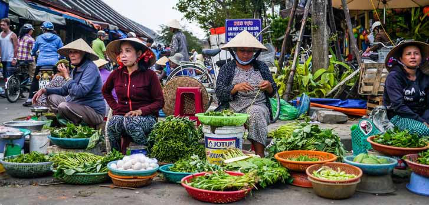
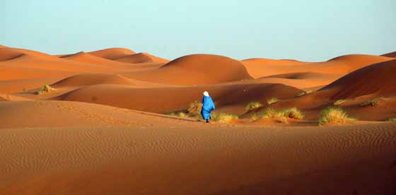

VIETNAM
Familierejsen til Vietnam er blandt vores mest populære rejser for familier med børn. Rejsen indeholder mange højdepunkter, bl.a. besøg hos en vietnamesisk familie i charmerende Hanoi. Her mærker I den vietnamesiske gæstfrihed og ser, hvordan en almindelig familie lever. Glæd jer ligeledes til den smukke sejltur i Ha Long-bugten, hvor I overnatter på skibet og kan nyde den stille aften og morgen i bugten, omgivet af de vidunderlige kalkstensbjerge. Images/barn-rispapir-hat.jpg
SRI LANKA
Familierejsen til Sri Lanka er tilrettelagt med tre opholdssteder. På dagsture oplever I tidligere kongebyer, hvor man fornemmer landets historiske dybde, kommer til Anuradhapura med det gamle Bo-træ og til Sigiriya, hvor Kong Kasyapa byggede sin særprægede løveborg på en klippetop. I bor bl.a. i det smukke Kandy, den gamle kongeby med Tandens Tempel. I besøger kokosplantager og hører om teproduktion, og så skal I naturligvis opleve det rige dyreliv i de frodige nationalparker. Rejsen slutter ved stranden b.a. med besøg på et skildpadde-center og med mulighed for en sejltur, hvor I kan observere blåhvaler.

Marokko
Vi har sammensat en meget alsidig familierejse til Marokko, der kombinerer det farvestrålende Marrakech med ophold i den smukke Sahara-ørken. I ørkenen overnatter I på et lille ørkenhotel med udsigt over det smukke ørkenlandskab. Der er mulighed for at forlænge rejsen med ophold i Agadir, hvor I kan nyde stranden og det varme klima.
